“Skateboarding is a vehicle for experience and formal invention; it produces a new regime of perceptions and affects, forms of movement, and even —why not— ideas.”
When you know that a single “caillasse” (pebble) can knock you to the ground or that a simple piece of concrete can make you play around, you quickly understand why skateboarders pay attention to architecture. That’s certainly true for me, having been a skateboarder&player since I was 15. The game of “this is our space”, of looking for the right spot, of “messing around” in a way, fascinated me. This spirit, this naivety, and this sensitivity inspire me and feed my artistic work. I want to continue this game, but differently—no longer just with my body, but with form, and, if possible, contribute to supporting and enriching the community that built me...
Since the 1950s, the city has transformed and shaped skateboarding (and vice versa) into both playground and a place of exploration. Inspired by surfing, the first skaters adopted concrete curves, and after the construction of the first skateparks in the 1970s, the Z-Boys of Santa Monica (USA) revolutionized the sport by taking over empty swimming pools, pipes…
New exploration (a game where we escape limits or seek out new ones).
In the late 1970s, skateboarding became more free-spirited and urban, embracing the city as a playground. Municipal skateparks began to appear, but they were often overly restrictive, poorly designed, and intended to keep skaters out of public spaces. Faced with increasing bans, the sport reclaimed the city in a rebellious spirit and came to be seen as transgressive. This is how skateboarding truly came into its own: raw, free, and urban.
By using it, athletes claim this space as theirs. They become the space. 1
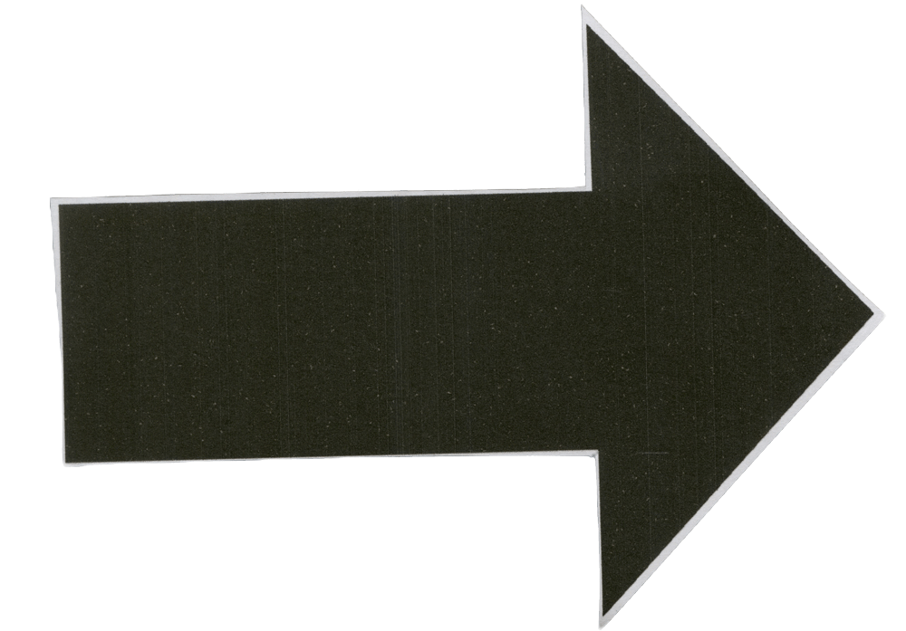
A unique relationship, I dare say: while most people—except architects—see the city without analyzing its forms and materials, skateboarders read its lines of movement. Every element becomes an opportunity. As sensualists of space and lovers of form, they transform the city into ‘skatescapes’, where bodies and architecture interact. “Skateboarding […] always amounts to creating a kind of ‘montage’ from the variety of materials and forms offered by the city, energizing or destabilizing structures designed for rest and comfort to the point of reversing their functions and meaning.”2
The city is no longer a static backdrop but a space for interaction and transformation. Through a sensitive, inventive, and improvisational*1 relationship with the space, the skateboarder does not simply pass through it: he reimagines it, disrupts it, and challenges its norms*2.
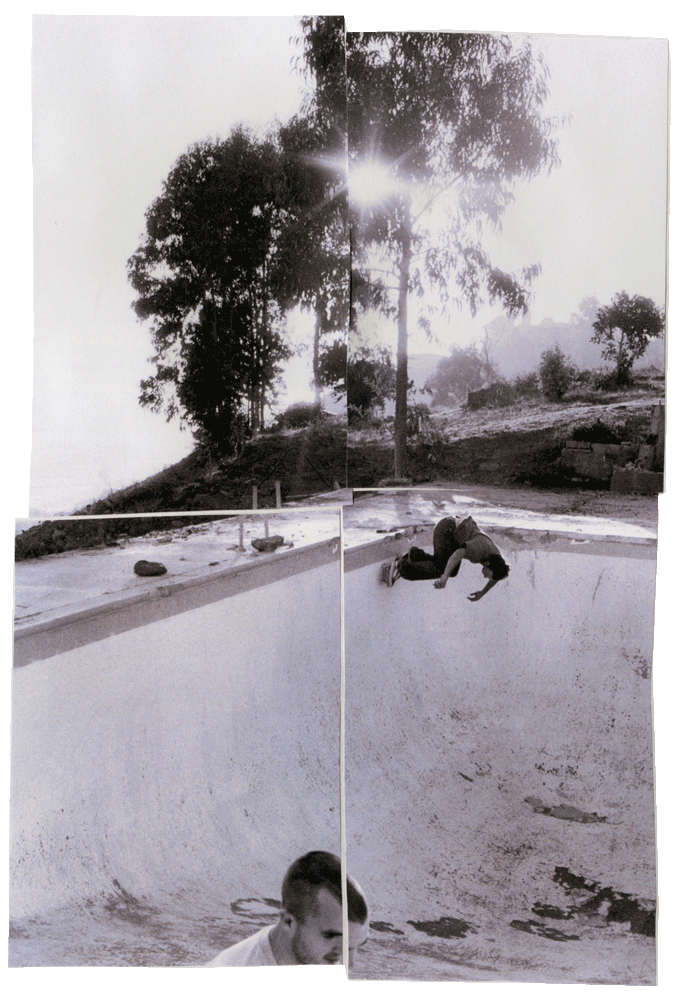
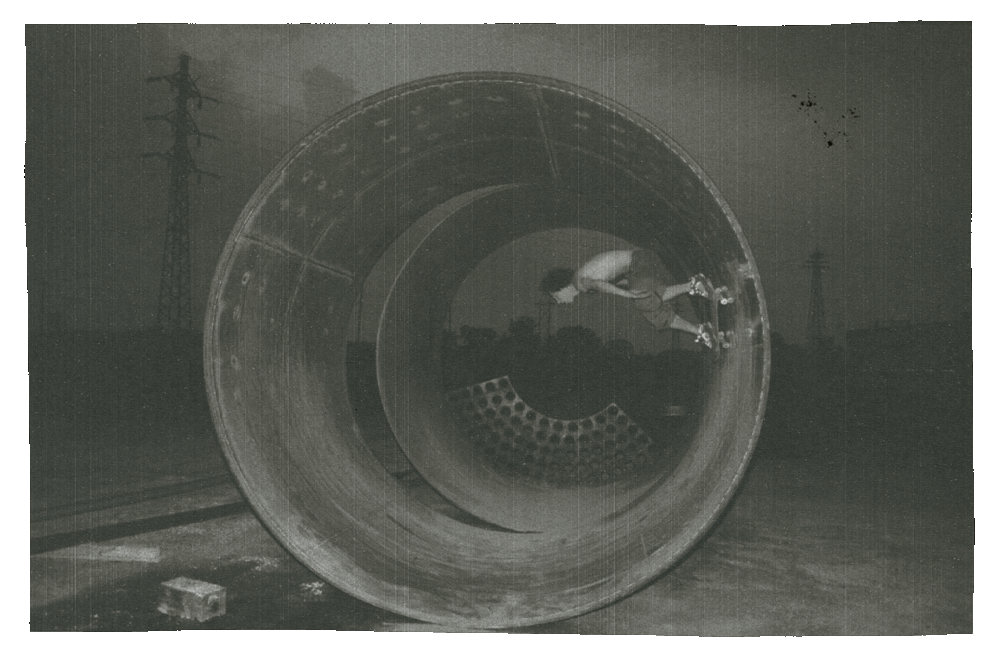
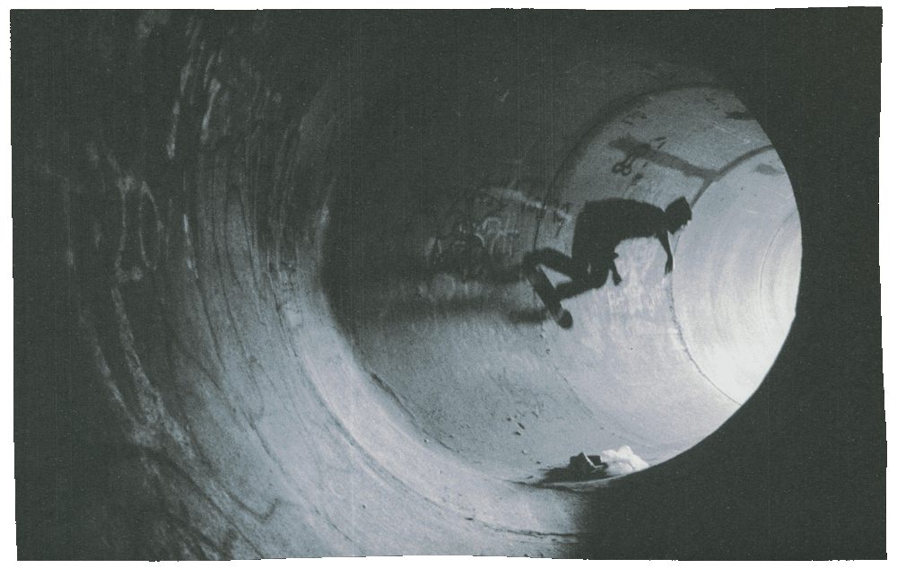
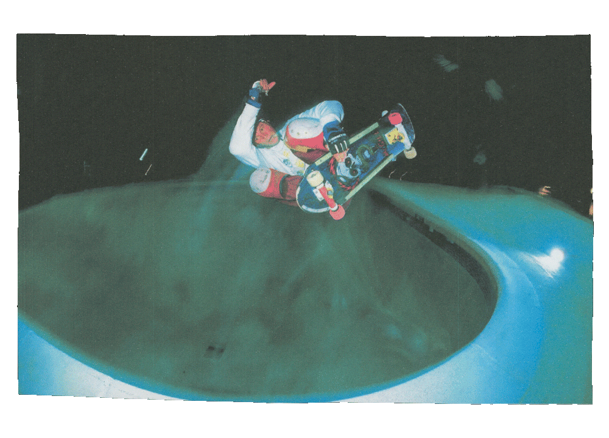
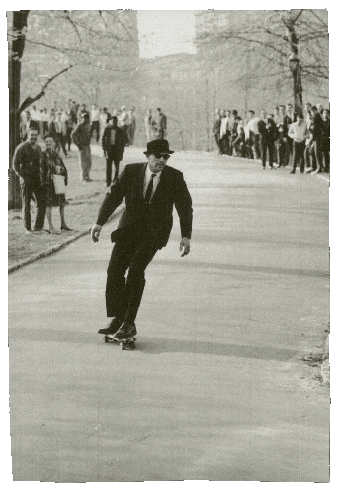
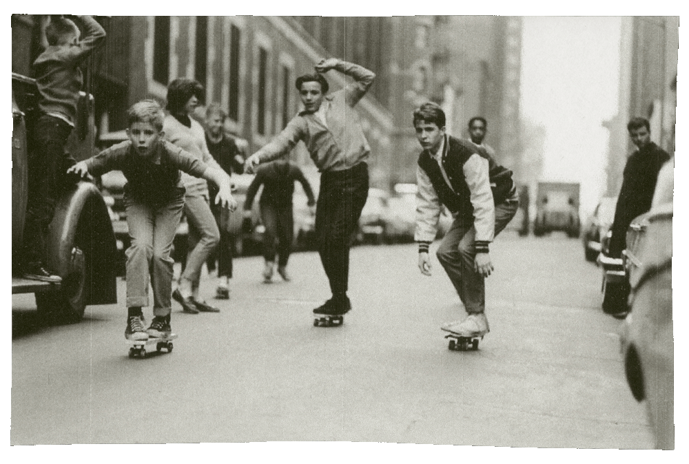
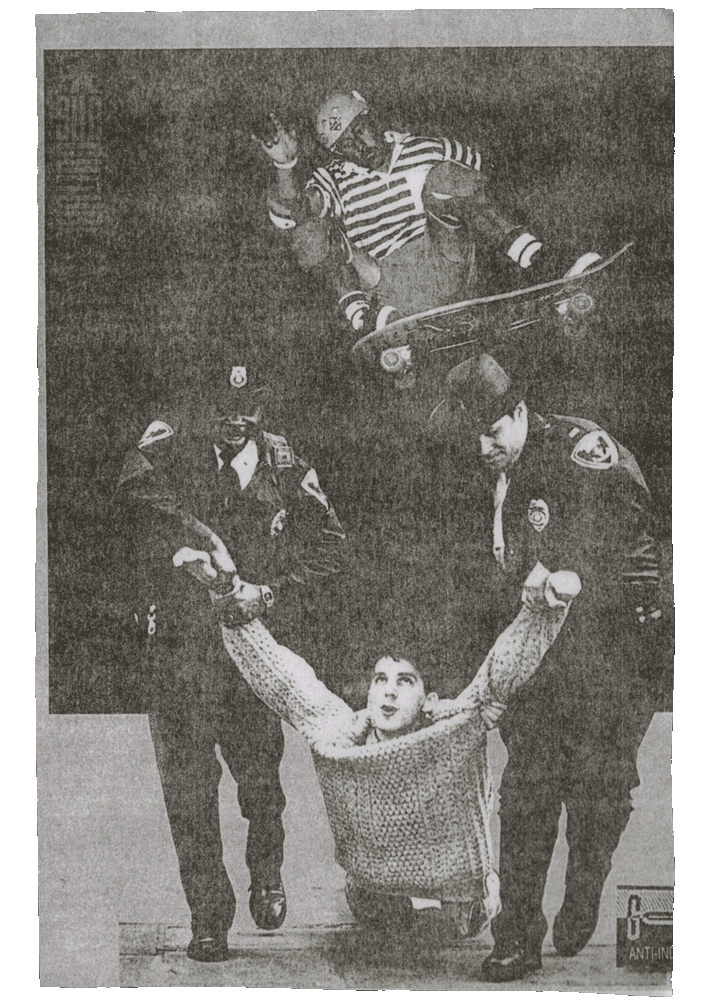
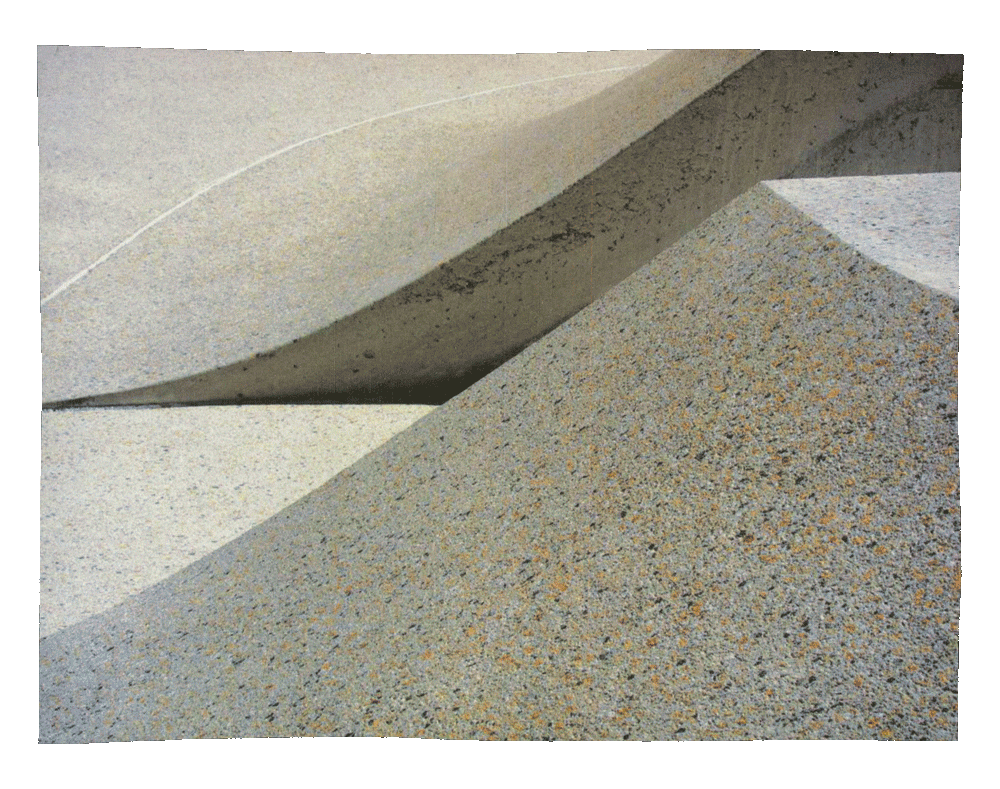
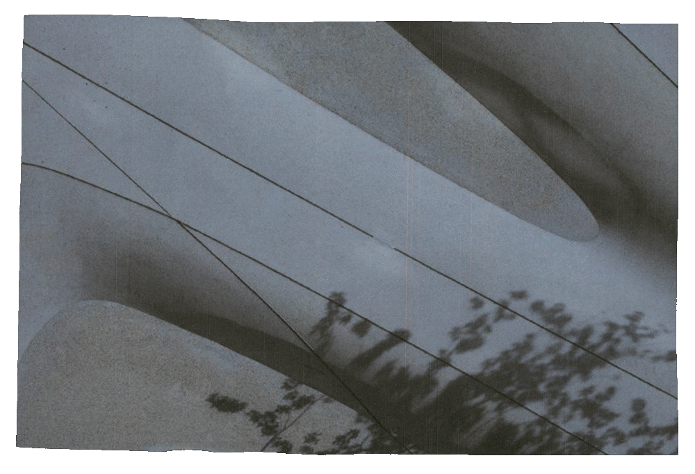
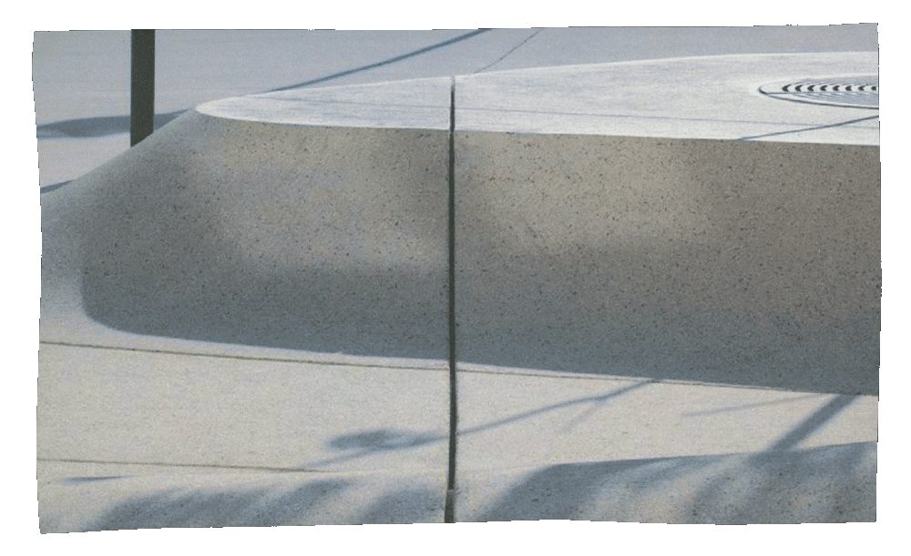
How does skateboarding ‘decolonize’ standardized public space (given its primary function, which is to play using a skateboard) by using it as a space for experimentation and improvisation? Is skateboarding the perfect metaphor for play in the city?
Street skaters, like architects, have a fascination with architecture—one that is equally intense but disctinct. While architects focus on form and the overall composition, skaters, rooted at street level, concentrate on details, textures, and ordinary elements.
Skateboarding “does not merely challenge or reappropriate public spaces: it performs them”3..
Through the interplay of body, board, and built environment, skateboarders become architects of the local and the temporary. Space enables the authentic production of itself4.
In “Skateboarding, Space and the City”, Iain Borden links this sensory relationship to Michel Foucault’s concept of ‘heterotopia’5 (1967): an ‘other place’, real yet reappropriated. Defined as a physical location of utopia6, it refers to concrete spaces repurposed for other uses that harbor the imagination. Thus, skateboarders occupy ordinary places (stairs, parking lots), which they transform into shared heterotopias, diverting the original use of urban space. Skateboarding, with no fixed rules, remains playful, improvised, and ‘sauvage’.
Jacques Baroux criticizes the development of skateboarding as a sport and the fact that skaters are being pushed into designated areas. “This ‘standardization’ of skateboarding puts an end to the wild form of skateboarding that involves a playful subversion of the city.”7 Skateboarders follow neither plans nor imposed functions: they produce their own, constantly evolving cartography. In the manner of the ‘bricolage’ described by Claude Lévi-Strauss in “La Pensée sauvage”, they reconfigure space using existing elements. The ‘savage mind’ is expressing the world through indefinite arrangements8.
The skateboarder is a psychogeographer in action. WHAT?
Guy Debord’s Situationist Movement (1958–1972) defines psychogeography as the study of the specific effects of the geographical environment (particularly the urban environment) on individuals’ emotions and behaviors. “The Situationist International”9 denounces the banal, boring city, a reflection of a society of individual comfort, and calls for ‘dériver’.
‘Dériver’ (drifting)?
Large cities encourage a form of entertainment known as ‘dérive’, a form of aimless movement guided by the influence of the surroundings 10. Leisure and play *3 are the key elements of this ‘dérive’. Debord emphasizes the need to adopt an experimental attitude toward urbanism, one of détournement. As skateboarders, we do the same!
HOWEVER, skateboarding also causes disturbances (noise, property damage, etc.): the skater “shares his playground with those who don’t play” and “tends to annex rather than share”11. In response, cities are developing defensive designs and repressive measures, revealing the normative nature of public space (often based on the idea that skaters do as they please and show no respect).
Why do skaters keep demanding more?
Reappropriation is an “operational constraint”12, based on the idea that public space involves real interaction with others.
Where the Situationists called for a city open to ‘dériver’, the unexpected, and play, another logic has gradually taken hold: that of a rationalized, secure, and optimized public space.
In “Junkspace”(2002), Rem Koolhaas describes a standardized urban space dominated by comfort and consumption (“It creates communities based on statistics, not on bonds”, “It replaces hierarchy with accumulation…”—here, a standardized urban space, designed in successive layers, without any real, perceptible spatial intention). Conversely, the skateboarder acts as a critical reader: he reveals forgotten potentials, transforms neglected places, and reintroduces a hierarchy of use. An involuntary designer, he extends the architectural project (“design does not really end with completion of construction”13) and ‘decolonizes’ the space through often ephemeral appropriations. Thus, skateboarding generates movement, restores life and humanity on spaces and creates imagination where the norm prevails 14.
The skateboarder is a unique urban figure: heterotopic, playful, a drifter, and an actor! Transforming the city into a playground is no easy feat: public space is also expected to be stable, legible, and safe. Not everyone may aspire to a more conflict-ridden or experimental city. Skateboarding introduces deliberate tension, playfulness, and the unexpected into a standardized environment, creating disorder within an ordered system. Today, it also seeks to engage with the city to foster better coexistence—a long and sometimes conflict-ridden process…
“It is on the street that skateboarding takes on its infinite dimension, rooted in urban exploration and
interaction with public spaces and people… ”
Léo Valls
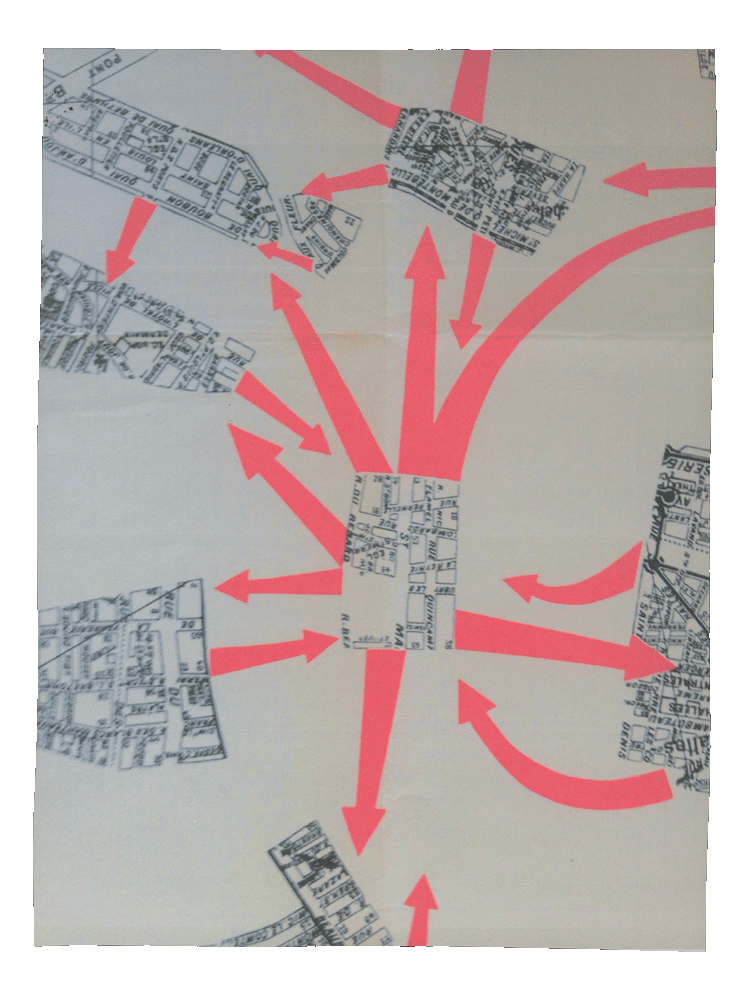
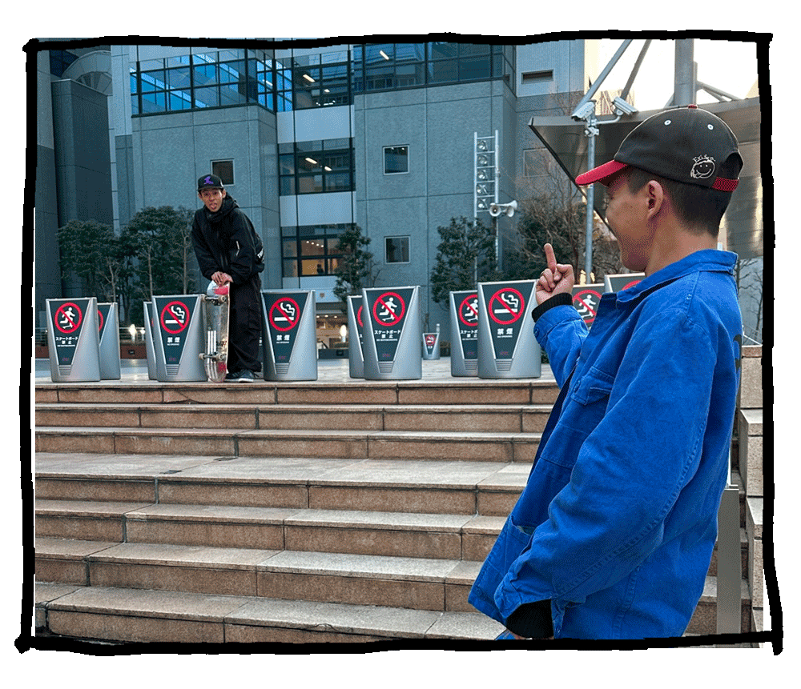
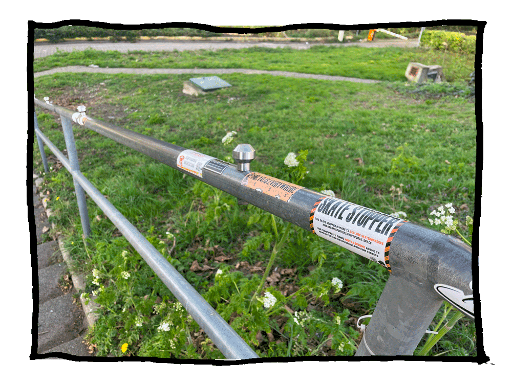
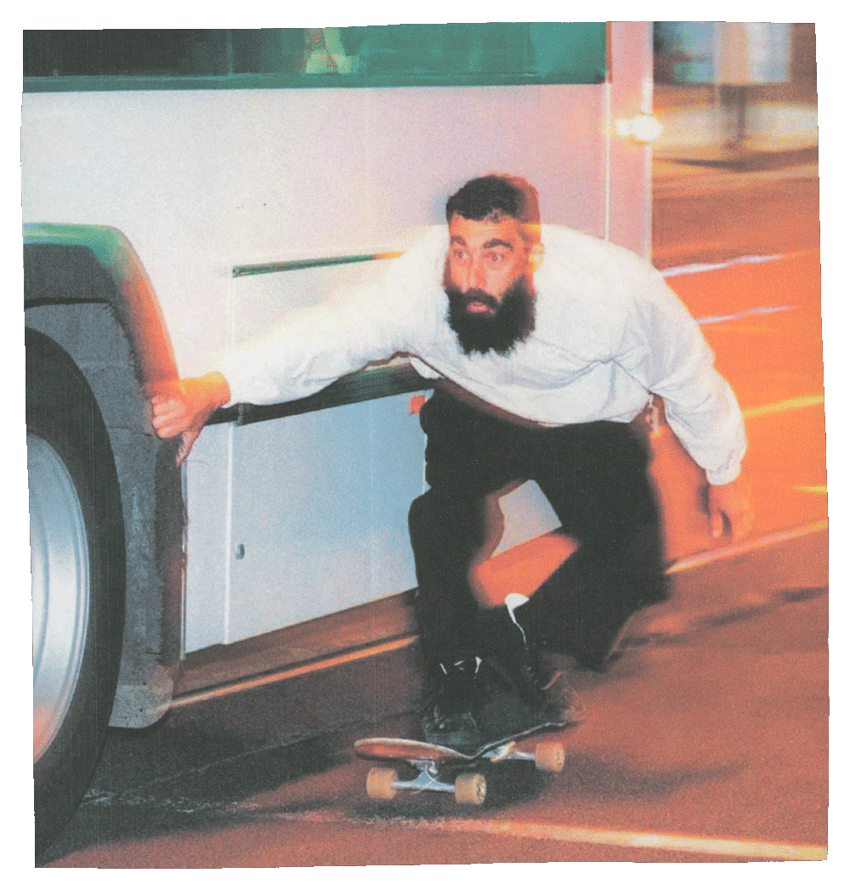
They may not be preparing for a revolution, but they are building—with less and less shyness—a society that’s completely ‘hors-piste’ (off the beaten path).
How does the city approach this desire to play, however positive it seem? How does the “trio”—skaters, the public, and urban planners—coexist and work together to rethink urban space? SKATE = profits??
Are we heading to a new era for sport in society, or not at all? It is difficult to say, given how closely innovative initiatives are intertwined with the most traditional forms of public and commercial policy.15
Skateboarding reopens space to the imagination: the skater sees the city as a realm of possibilities, a playground. As Gaston Bachelard writes in “The Poetics of Space”, space is not only measured; it is experienced, through the imagination16. Thus, skateboarding transforms measured space into lived space, revitalizing neglected places and giving them new value—sensory, aesthetic, and functional.
As seen, skateboarding generates conflict by breaking into spaces designed to ‘minimise uncertainty’. Local repression: complaints, fines, anti-skateboarding measures, and exclusion by local residents or officials. These restrictive policies are implemented mainly at a local, or even micro-local, level. The law equating skaters with pedestrians is regularly bypassed in the name of local ‘specificity’, and this trio (skater–public–urban planner) therefore initially operates within a context of tension. Perhaps these practices are a communicative alibi and fuel the game of confrontation.17
In Bordeaux (France), as elsewhere, skateboarding has long been viewed merely as a sport. In 1999, the city built a skatepark (with a strictly athletic focus) and legitimized the ban on street skating (“skating belongs in the skatepark”), revealing a lack of understanding of urban cultures. Faced with a surge in fines in 2016 (over 1,000, ranging up to 135 euros), Léo Valls*4 launched a mediation effort in 2017 to reposition skateboarding as a cultural and urban practice: “It’s the smartest thing to do. It’s about saying to ourselves, yes, we need to communicate—even with the people who’ve been fining us for years!” Exhibitions, skateable installations, and dialogue with the city: the goal is to show that skateboarding can be beneficial, that it deeply loves the city, and to ‘find a win-win compromise.’ A ten-year plan (which is working very well!) then integrates skateboarding into street furniture (benches, planters…), fostering peaceful coexistence. Mediation is therefore crucial, and city hall has understood this well by providing designated spots, always reminding skaters that they aren’t the only ones using the space, and residents that skateboard is part of the city18.
I remember skating on the first skateable installations in Bordeaux in 2019 by Léo, and it was amazing—everyone stopped, chatted with them, and that’s exactly what we need to try to bring to other cities. Congrats Léo!
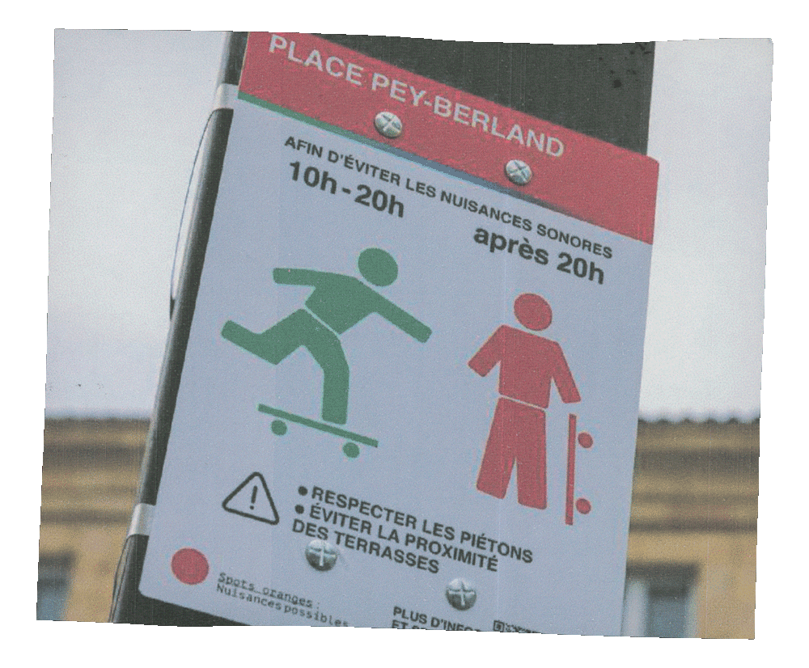
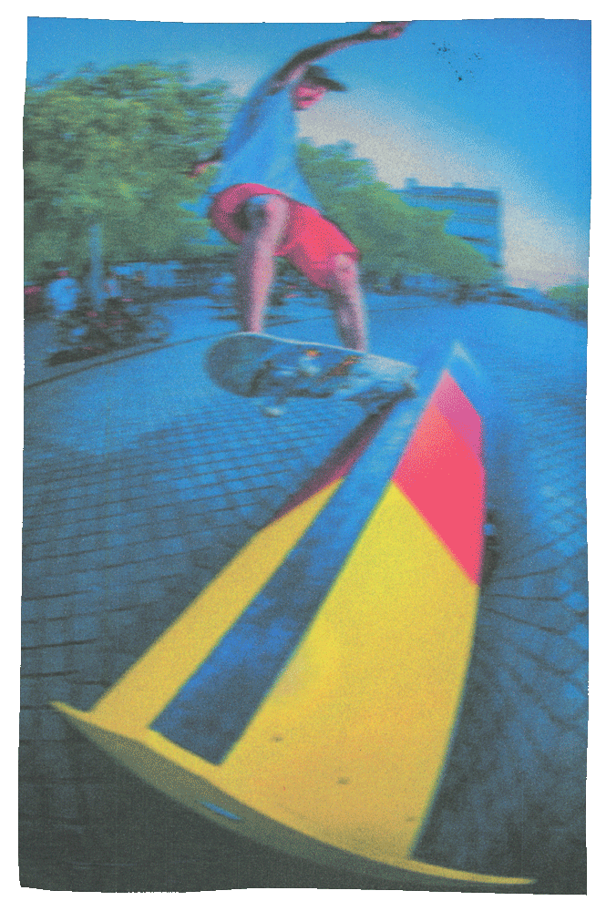
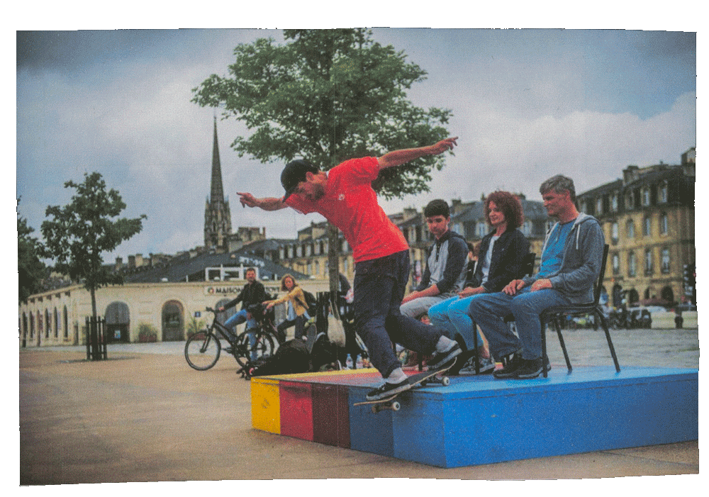
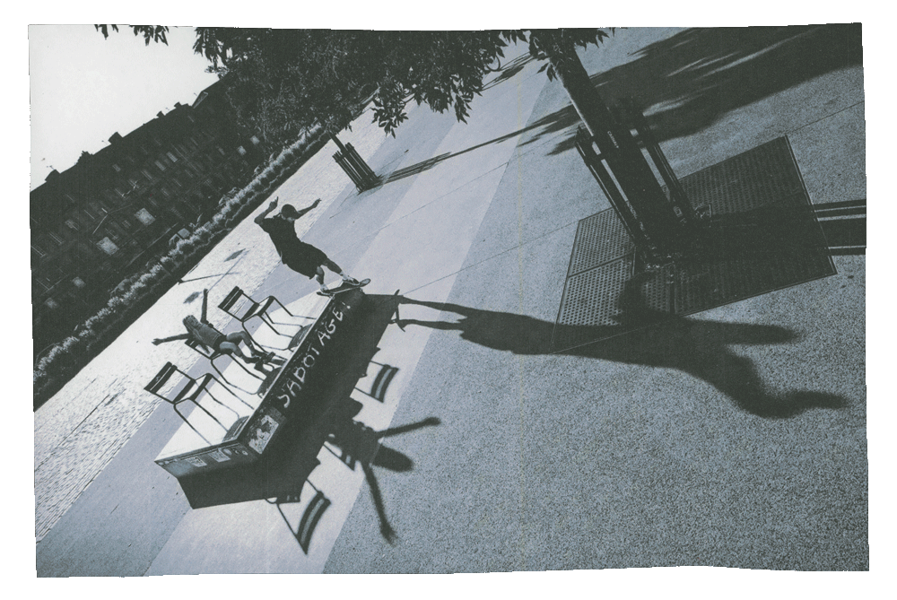
Conflict becomes a starting point for dialogue, which can yield shared benefits: a more vibrant city, revitalized public spaces, renewed social interaction, and the well-being of skaters.
Increasingly, cities are recognizing the value and challenges of engaging with skaters—whether to integrate them or regulate them. But this understanding remains uneven. As early as the 1990s, the skatepark was often conceived as a tool for channeling ‘sauvage’ skateboarding, since playfulness is expelled from the streets because using space creates disorder 19.
Skateparks, often standardized and conceived as mere sports facilities—and thus poorly designed and experienced—have long served to exclude skateboarding from the city center: the “dedicated” space becomes ‘segregated’. In France, until the 2000s, they were mostly ill-suited and rarely regarded as true public spaces. Today, certain projects are evolving through collaboration between cities, designers, and users, aiming for spaces that are more integrated and open—and sometimes hybrid. They also serve as an excuse to ‘bring young people back’ to places where the architecture doesn’t encourage play. This is the case in my grandparents’ small village, Goult in the Luberon, in southern France near Marseille, where genuine collaboration was essential. Sometimes, municipalities even issue calls for proposals to approach these projects in a more open and collaborative manner, but despite this, skateboarders continue to reinvent the city: They refuse to have only skateparks so they are constantly reinventing their space20.
Thus, the skatepark remains ambivalent: a tool of control but also a space for survival, transcending its functional status through the social interactions that take place there (since it is, after all, often the first place for practice and socialization among skaters)! Self-built spaces are springing up, often illegally, due to a lack of infrastructure.
Cities’ responses vary: temporary tolerance, demolition without warning, replacement with dedicated facilities, or sometimes support. “The city failed to recognise in time the value of this place to the town. It is not just a space that has been destroyed, but a community as well.”21 “Through and within the spaces for negotiation and debate that are emerging, skateboarders position themselves as partners in the city and assert their desire to be recognized as citizens who, while certainly making demands, are also engaging in a process of participation and knowledge-sharing.”22
Consequently, it becomes essential for cities to move beyond security-driven approaches by envisioning spaces that are more open to multiple uses: “[…] if the idea is accepted that the entire city is a playground”23.
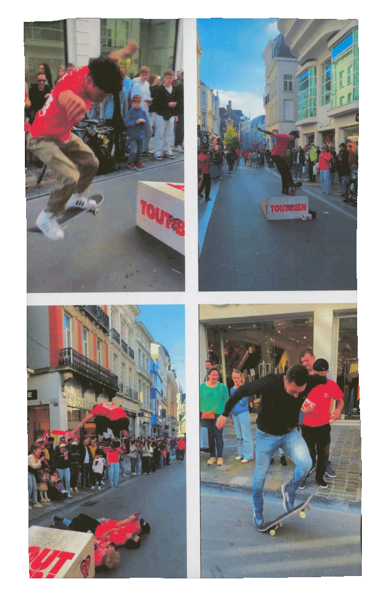
Guillaume Clincke:
There are three very important stages you need to have in mind to begin the dialogue with a city.
I asked Guillaume Clincke*5 whether the idea of a ‘model’ for cities to follow might be worthwhile. “Yes”, but these models would remain general. In very few cases could the same ‘key’ be applied, since each local context produces different solutions.
Inspired by what Léo has implemented in Bordeaux (knowing that Ghent will necessarily produce different results), he pointed out three important stages to me: communication and mediation—sometimes difficult to achieve but essential (dialogue, perspectives from the city and skaters, proposed solutions)—the organization of events and the introduction of skate culture, and finally, appropriate infrastructure: skateable sculptures, adapted street furniture, requests for assistance from the city government for projects… Mediation is essential: positive communication around skateboarding, showing what it can bring to the city, and the skaters’ own willingness to understand the city and demonstrate that they understand and will respect the value of ‘coexistence’.
In Malmö (Sweden), this approach is fully embraced and integrates skateboarding into urban policy: skaters are partners in the design and maintenance of spaces, access is expanded to all members of the public, and facilities are often conceived as ordinary public spaces rather than skateparks. Skateboarding thus becomes an integral part of the city, to the point of generating a genuine skate-related tourism industry.
The skater–public–urban planner trio is built on tension and dialogue, not on what is obvious. When it works, mediation becomes an effective tool for urban planning. I would say today that cities and skaters are increasingly understanding this. This, then, is indeed the model to follow.
Let’s keep this momentum going, because yes, this dialogue requires mutual courage!
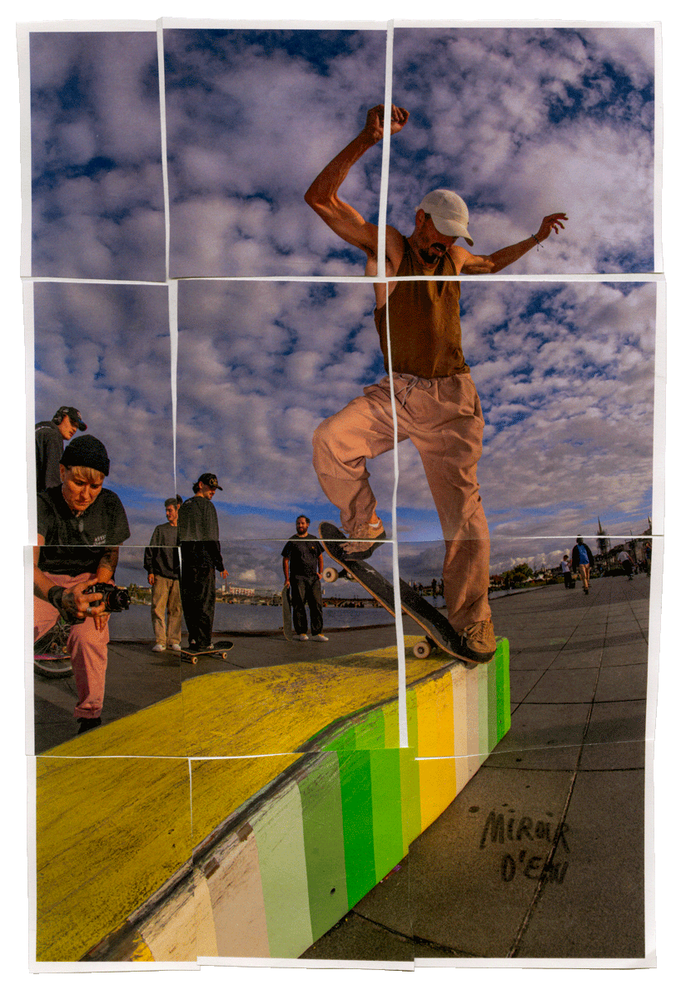
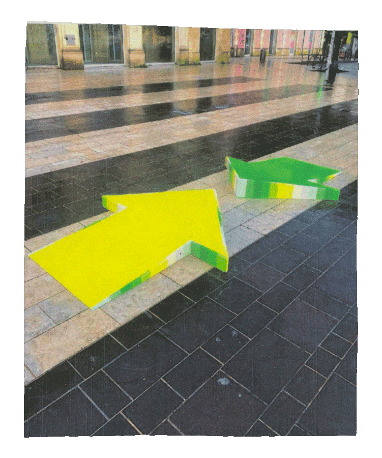
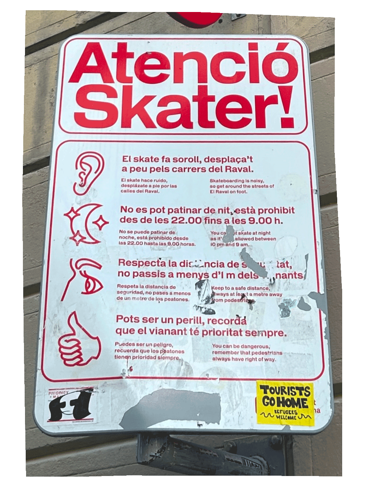
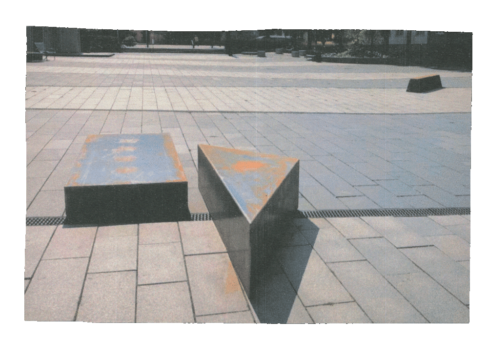
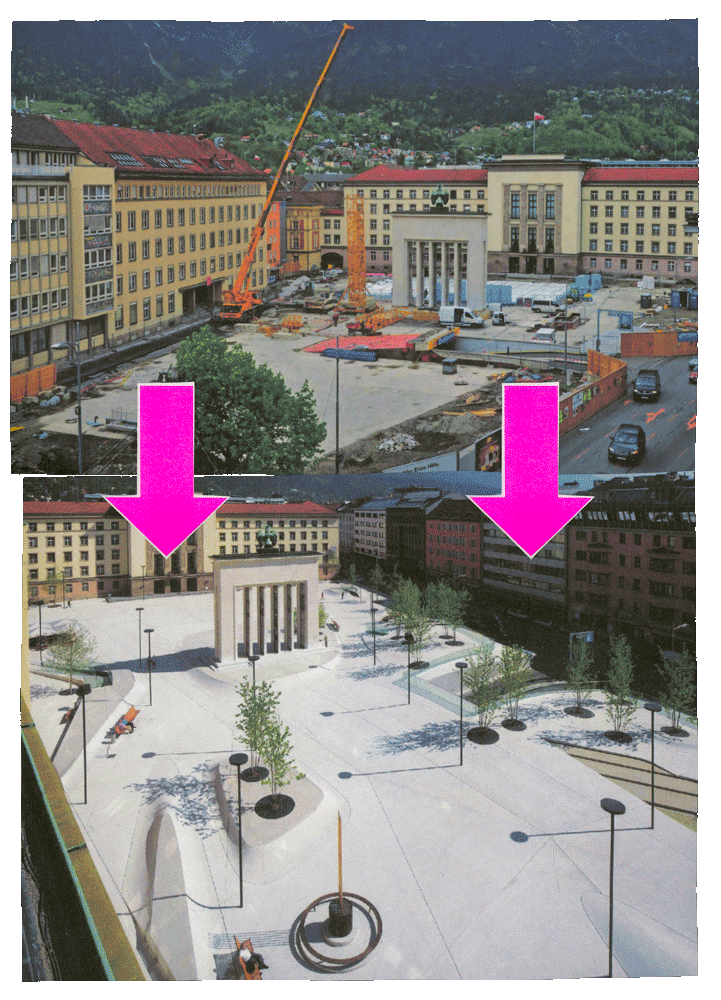
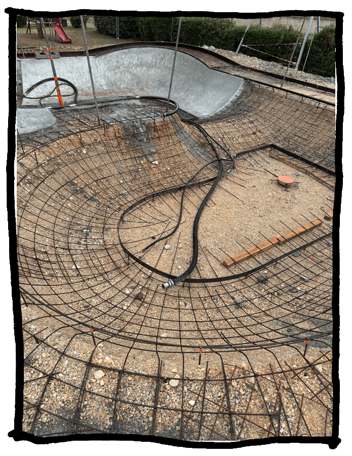
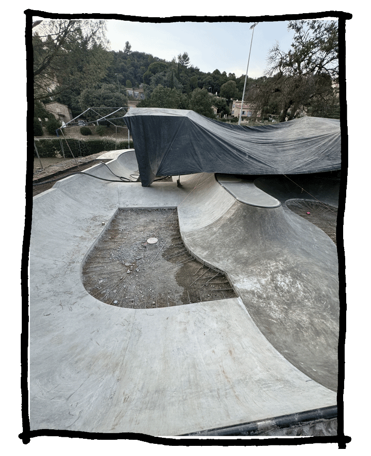
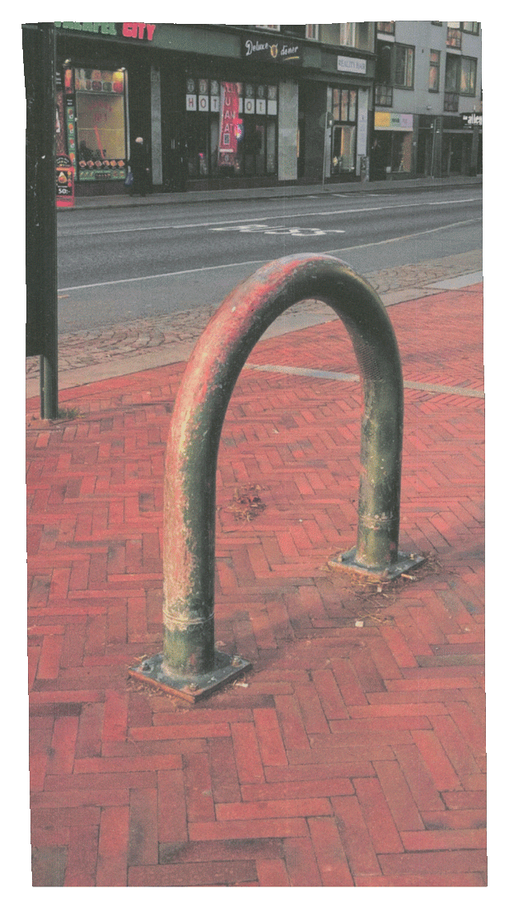
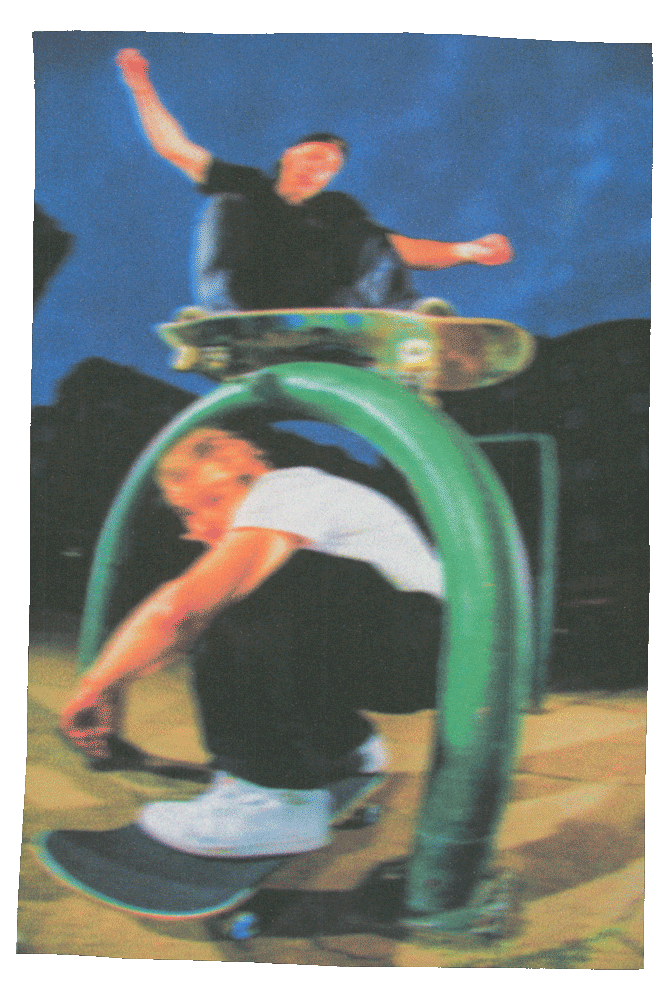
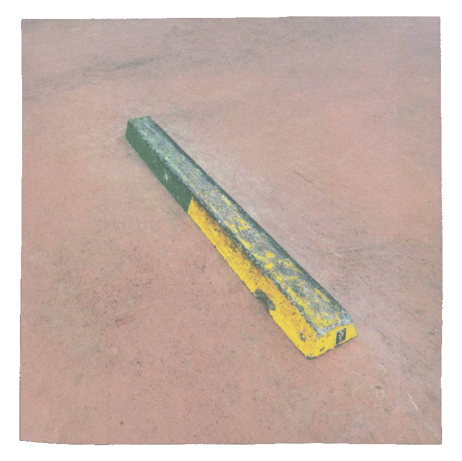
“He became the ‘driving force’ in the transformation of a skate- resistant city with conservative policies into a city with a fruitful collaboration between skateboarders and the municipality of Bordeaux.”
“It’s the smartest thing to do. It’s about saying to ourselves, yes, we need to communicate—even with the
people who’ve been fining us for years!”
Interview with Léo Valls, 2026
Skateboarding shapes the city: born on the streets, it reveals and disrupts it. Through play, wandering, subversion, and improvisation, it carries out a ‘decolonization’ of public space ‘in the spirit’ of a psychogeographer: by appropriating elements of the urban landscape, which he redefines and transforms into landmarks within a reimagined geography, the skateboarder invents his own city.24
Skateboarding creates a tension between freedom and control, lived experience and prescribed space, while opening up the possibility of a dialogue between the skateboarding community, residents, and urban planners. It offers the possibility of a city more open to play, more social, adaptable, and vibrant, where, as Guy Debord wrote, ‘dériver’ (drifting) would no longer be an act of resistance but a way to fully inhabit shared space: “One day, we will build cities for dériver.”.
Blessed are the bold places that study/embraced skateboarding!
“Where can we find practices and spaces that are less
compliant, less passive, and more
creative in their engagement with cities? For me, this takes the form of the study of skateboarding.”25
ZARKA, Raphaël. “Le Skateboard fait penser.” Paris, 2006–2007, chap. “Réenchanter le béton?”, p.79, 80.
ZARKA, Raphaël. “Conjonction Interdite”, 2011, Editions B42, p. 15-16 et 38.
LEFEBVRE, Henri. “Production de l’Espace”, 1974.
BORDEN, lain. “Skateboarding, Space and the City”, Berg, Oxford, 2001, chap. “Another pavement, another beach”, p5.
FOUCAULT, Michel. “Des espaces autres: utopies et hétérotopies”, texte transcrit d’une conférence en 1967 et publié par le journal Architecture /Mouvement/ Continuité en 1984, p.3.
LÉVY-STRAUSS, Claude, “La pensée Sauvage », 1962, Plon éditions, chap. “La science du concret” p.32, and chap. “La logique des classifications Totémiques”, p.49 (accessed on 27 February 2026 at 10.05 am).
“The Internationale Situationniste” was a magazine first published in June 1958 and continued until 1969 in France.
DEBORD, Guy, FILLON, Jacques. “Potlatch”, n°14, november 1954, p.75-76.
HOWELL, Ocean. “The Poetics of Security: Skateboarding, Urban Design, and the New Public Space”, 2001
ECKBO, Garrett. “Architecture and the Landscape”, 1964, p.22.
“Etude nationale sur l’art urbain”: A study commissioned in November 2018 by the French Ministry of Culture from the association Le M.U.R. and published in 2019 on the ministry’s official website, p. 8.
PEDRAZZINI, Yves. “Rollers and Skaters: sociologie du hors-piste urbain”, 2001, p.189.
BACHELARD, Gaston. “La poétique de l’espace”, 1957, “Introduction”, chap.9 p.27.
PÉGARD, Olivier. “Insolence des pratiques ludiques adolescentes et réponses institutionnelles”.
DEBERDT, Benjamin. “Scene/Tours/vu par Jo Dezecot”. Live Skateboard Media.
RIFFAUD, Thomas, GIBOUT, Christophe, RECOURS, Robin. “Skateparks: les nouveaux parcs de jeu pour enfants. Une analyse sociospatiale des sports de rue à partir du cas de la métropole Montpellier”, Les Annales de la recherche urbaine 111, n°1, 2016, p.30-41.
CAPET, Pieter. “Voir et construire la ville avec le skateboard. Le chaînon manquant.”, 2010.
WEESSIES, Ronnie. « Plan for Rotterdam : Mike van Staten », 2025, https://architectenweb.nl/nieuws/artikel.aspx?id=59719 (accessed on March 5, 2026).
CALOGIROU, Claire, TOUCHÉ, Marc. “Le skateboard: une pratique urbaine sportive, ludique et de liberté”.
Institut Bruxellois de Gestion de l’Environnement (IBGE). “SK8BXL, Le skate dans la ville”.
Statement of originality
This is to certify that to the best of my knowledge, the content of this thesis is my own work. This thesis has not previously been submitted for any degree or other purposes. I certify that the intellectual content of this thesis is the product of my own work and that all the assistance received in preparing this thesis and sources have been acknowledged.
Thank you to Dirk Vis for his guidance, feedback, knowledge, and expertise.
Thanks to the tutors Simnikiwe Buhlungu, Bart Baets.
Thanks to my coding tutors Thomas Buxó, François Girard-Meunier and Pascal de Man for their support.
Thanks to Léo Valls, Stéphane Gallois, Guillaume Clencke and Mike Van Staten who generously shared their
time and insights during our conversations.
Thanks to the references I have cited.
Thanks to my friends/classmates from the Royal Academy of Art (KABK) in The Hague, Netherlands.
Thanks to that great school.
Thanks to Maya Sagara Curé for the proofreading.
Thanks to Sim for your encouragement and support.
Thanks to the fines I have received! Thanks to the city and to skateboarding. Thanks to the spirit of
skateboarding.
Translation: Deepl AI + me.
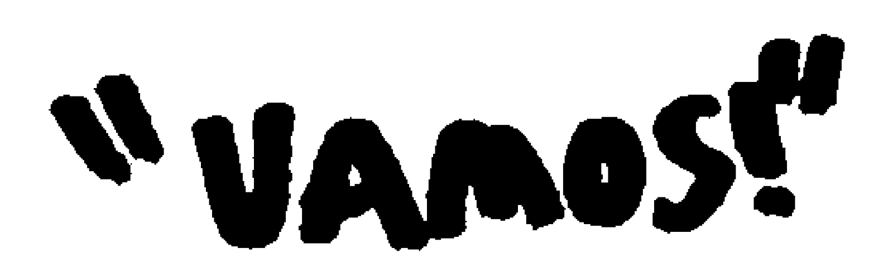
Armand Demulder
The evolution of skateboarding in cities:
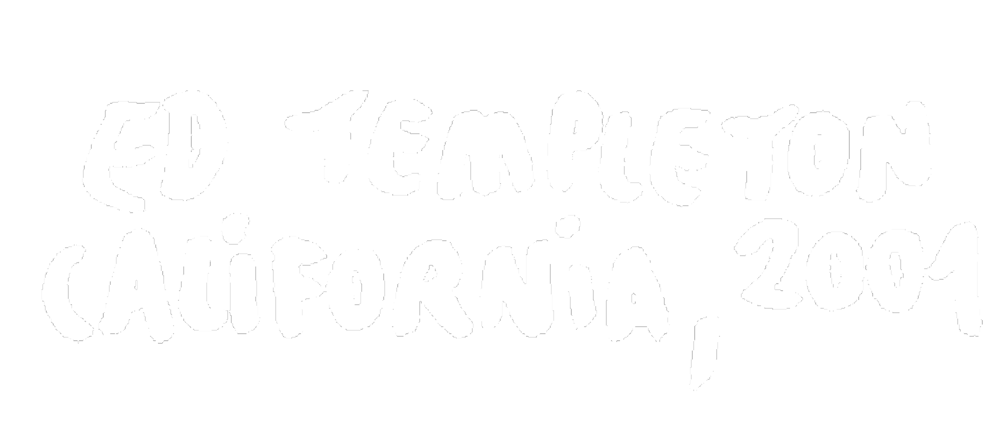
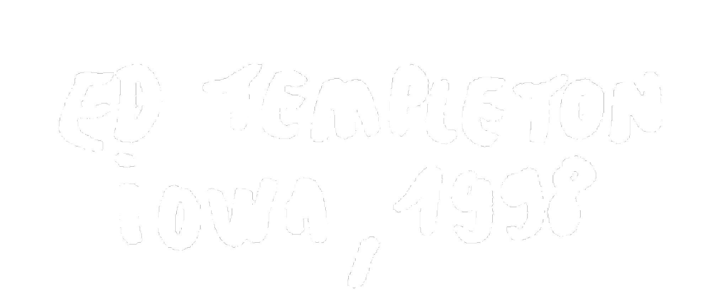
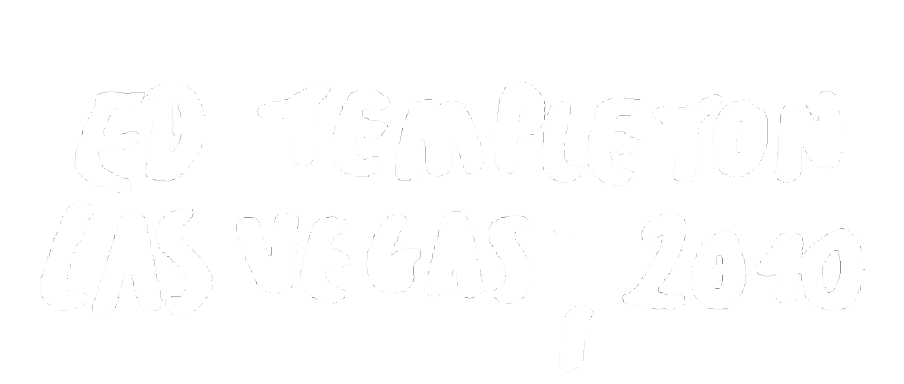
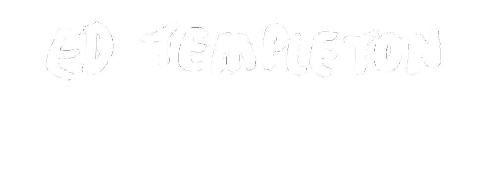
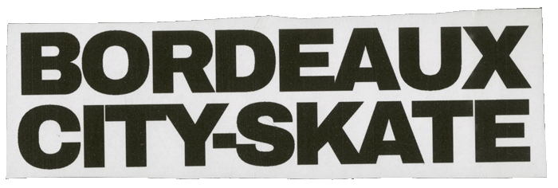
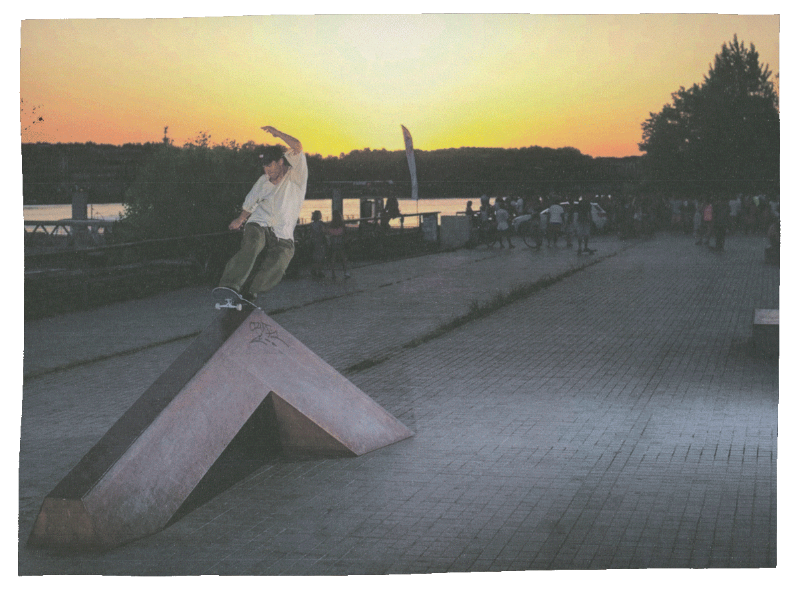
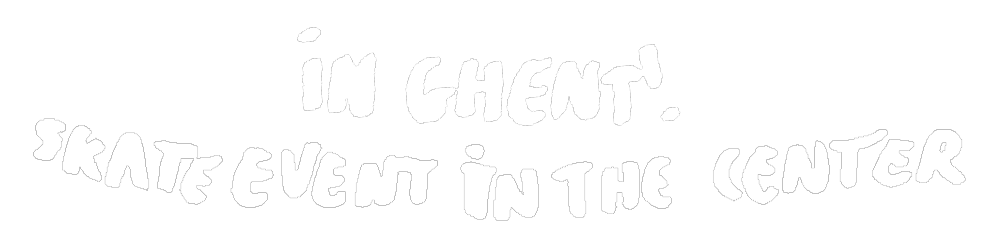
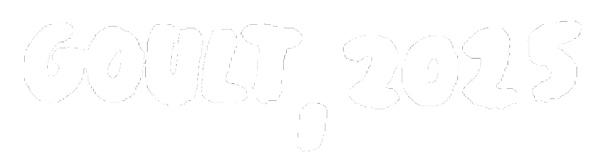
1.BROCHOT Aline, DE LA SOUDIÈRE Martin, "Pourquoi le lieu", 2010, p.6.
2. ZARKA, Raphaël. “Le Skateboard fait penser.” Paris, 2006–2007, chap. “Réenchanter le béton?”, p. 78.
*1. Improvisation is the art or act of creating, producing, or expressing oneself spontaneously, without preparation or a pre-established script, using whatever resources are available at the moment.
*2. Normativity refers to the binding nature of that which establishes rules, norms, or models of behavior (legal, moral, or social) intended to guide actions. It describes a rule’s ability to impose itself and shape behavior, acting as a standard of what ‘must be’.
3. ZARKA, Raphaël. “Le Skateboard fait penser.” Paris, 2006–2007, chap. “Réenchanter le béton?”, p.79.
4. LEFEBVRE, Henri. “Production de l’Espace”, 1974.
5. BORDEN, lain. “Skateboarding, Space and the City”, Berg, Oxford, 2001, chap. “Another pavement, another beach”, p5.
6. FOUCAULT, Michel. “Des espaces autres: utopies et hétérotopies”, texte transcrit d’une conférence en 1967 et publié par le journal Architecture /Mouvement/ Continuité en 1984, p.3.
7. ZARKA, Raphaël, “Le Skateboard fait penser”, Paris, 2006-2007, chap. “Réenchanter le béton?”, p.80.
8. LÉVY-STRAUSS, Claude, “La pensée Sauvage », 1962, Plon éditions, chap. “La science du concret” p.32, and chap. “La logique des classifications Totémiques”, p.49 (accessed on 27 February 2026 at 10.05 am).
9. “The Internationale Situationniste” was a magazine first published in June 1958 and continued until 1969 in France.
10. DEBORD, Guy, FILLON, Jacques. “Potlatch”, n°14, november 1954, p.75-76.
11. ZARKA, Raphaël. “Conjonction Interdite”, 2011, Editions B42, p. 15-16 et 38.
12. HOWELL, Ocean. “The Poetics of Security: Skateboarding, Urban Design, and the New Public Space”, 2001.
*3. “The concept of dérive is inextricably linked to the recognition of psychogeographical effects and to playful-constructive affirmation,” writes Debord in the Belgian journal “Les lèvres nues” (Issue 9, p. 88, published from 1954 to 1958).
13. ECKBO, Garrett. “Architecture and the Landscape”, 1964, p.22.
14. “Etude nationale sur l’art urbain”: A study commissioned in November 2018 by the French Ministry of Culture from the association Le M.U.R. and published in 2019 on the ministry’s official website, p. 8.
15. PEDRAZZINI, Yves. “Rollers and Skaters : sociologie du hors-piste urbain”, 2001, p.189.
16. BACHELARD, Gaston. “La poétique de l’espace”, 1957, “Introduction”, chap.9 p.27.
17. PÉGARD, Olivier. “Insolence des pratiques ludiques adolescentes et réponses institutionnelles”.
*4. Léo Valls is a professional skateboarder, consultant, and skateboarding advisor working with municipal services in Bordeaux, France.
18. DEBERDT, Benjamin. “Scene/Tours/vu par Jo Dezecot”. Live Skateboard Media.
19. RIFFAUD, Thomas, GIBOUT, Christophe, RECOURS, Robin. “Skateparks: les nouveaux parcs de jeu pour enfants. Une analyse sociospatiale des sports de rue à partir du cas de la métropole Montpellier”, Les Annales de la recherche urbaine 111, n°1, 2016, p.30-41.
20. CAPET, Pieter. “Voir et construire la ville avec le skateboard. Le chaînon manquant.”, 2010.
21. WEESSIES, Ronnie. « Plan for Rotterdam : Mike van Staten », 2025, https://architectenweb.nl/nieuws/artikel.aspx?id=59719 (accessed on March 5, 2026).
22. CALOGIROU, Claire, TOUCHÉ, Marc. “Le skateboard: une pratique urbaine sportive, ludique et de liberté”.
23. Institut Bruxellois de Gestion de l’Environnement (IBGE). “SK8BXL, Le skate dans la ville”.
*5. Guillaume Clencke is a skateboarder working in the field of urban planning, having worked for Leo Valls in Bordeaux and being a member of the “Hall of Skate” association in Ghent, Belgium
24. XIRANDAKIS, Milos. “Faire (de) la planche en ville”, revue Spirale, Érès, Paris, France, 2013
25. MADRIAGA , Manny. “Review: Skateboarding, Space and the Sity: Architecture and the Body, Borden, Iain”, 2001. Department of Sociological Studies, University of Sheffield.
The relationship between skaters and urban space is unique: 'savage', based on play and improvisation. As a skater myself, I’m fascinated by the curves, lines and spirit of skateboarding. We’ve all played at “hunting” for the perfect spot, causing a bit of trouble, getting fined, and wanting a better shared understanding of the space. Skateboarding is artistic; it’s inspiring and feeds my artistic work on a daily basis. (I want to continue enriching this game/community through form, not just the body.)
Since the 1970s, skateboarding and the city have evolved. From
the
Z-Boys of California to modular skateparks (often poorly designed and poorly experienced), ‘street’
skating and skateparks have continued to develop, and the city has itself become a playground, a lived-in
space, close to
Situationist ideas (of aimlessly 'dérivé' (drifting) through the city). Despite this positive spirit, it
generates tensions: nuisances, conflicts of use, restrictions…
However, over the past 20 years, a dialogue has begun to open up: mediation, dialogue and mutual listening on both sides. So, can skateboarding be seen as a form of resistance to the standardisation of public spaces? How does this coexistence (between the city and skateboarding) shape the rethinking of urban space?
These exchanges bring a better understanding of the practice and the issues (on both sides) and open the way for better integration or regulation. They often bring numerous benefits, such as urban facilities for all activities… Having spoken with several mediators, this process is long and difficult, but it offers real added value, and we must keep this up, bravely!
Through these reflections and discussions, I am exploring (in line with these values) how (large) hybrid (skatable) forms might emerge (which I will build): support for play, ownership and dialogue… Remaining 'savage' and playful seems essential to me in my practice.